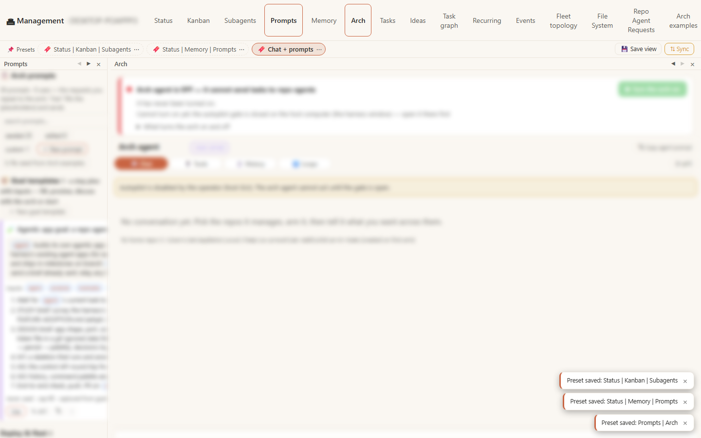
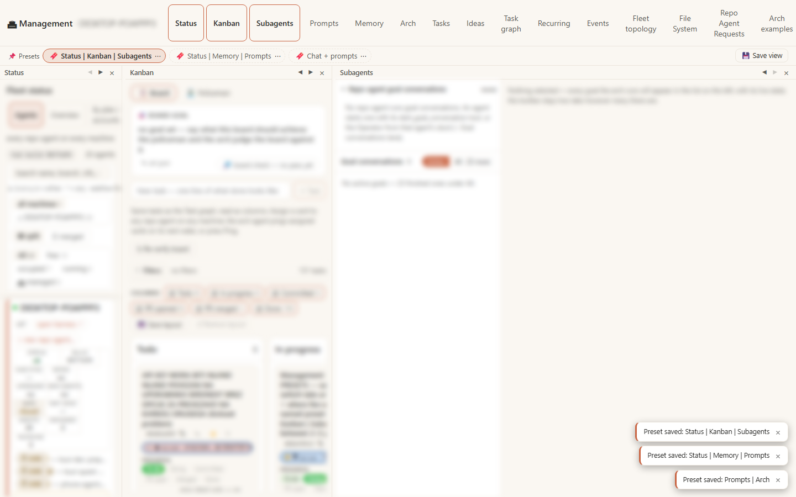
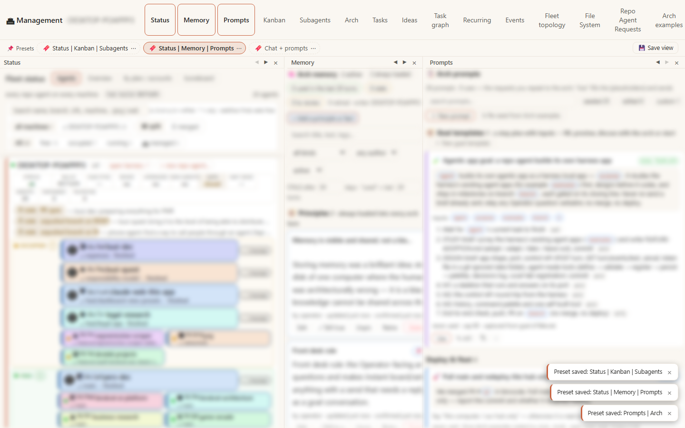
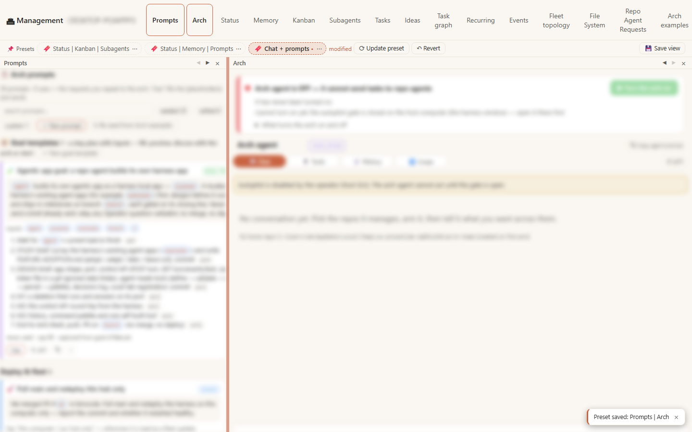
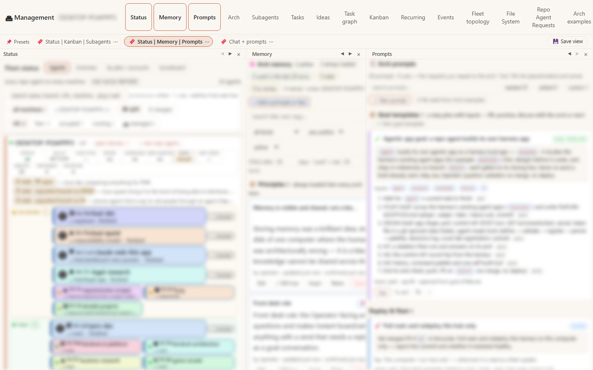
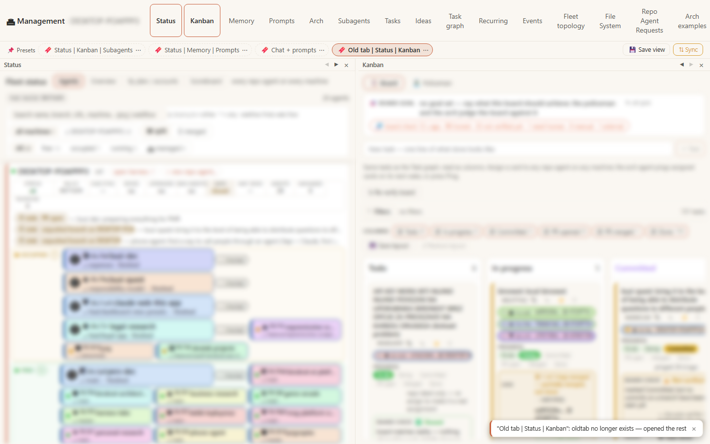

A toy dashboard: toggle feature tabs to show panes, drag the dividers, then Save view. Click a 🔖 preset (or Alt+1..9) to switch. Drag after applying → modified.
What a preset is
{ id, name: "Status | Kanban | Subagents", auto: true,
panes: [{ tab: "status" }, { tab: "kanban" }, { tab: "subagents", sel: "<conversation>" }],
fractions: [0.153, 0.264, 0.583], // sum 1 → survives window resizes
created, updated }
Which existing state it maps onto
| ManageApp key | applied as |
|---|---|
manageapp.layout | panes if 2+ panes, else tabs |
manageapp.paneOrder | preset panes first, the rest keep their relative order |
manageapp.hidden | every tab not in the preset |
manageapp.paneWeights | fraction × pane count for the preset's panes |
manageapp.tab | the first pane |
Nothing is written until a preset is applied: loading the page and saving presets leave the Operator's view untouched (lab check 1b). A tab that no longer exists is skipped with a toast; the rest share its width.
Two copies, browser wins
browser localStorage manageapp.viewPresets ← the working copy
hub GET/PUT /api/settings/view-presets (view-presets.json)
on load browser empty, hub has some → adopt the hub's
hub empty, browser has some → push the browser's
both, different → keep the browser's, show ⇅ Sync
on edit browser first; the hub follows if the two agreed before
⇅ Sync union by id, the browser's copy wins a conflict → written to both
Why Alt and not Ctrl: Chrome/Edge reserve Ctrl+1..9 for switching browser tabs. A page can't claim it.






Pane contents blurred on purpose: the feature is the layout.